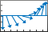

feather
Arrows from x-axis
- 
Syntax
Description
feather( plots
arrows originating from the x-axis. Specify the direction of arrows
using the Cartesian components U,V)U and V, with
U indicating the x-components and
V indicating the y-components. The
nth arrow has its base at n on the
x-axis. The number of arrows matches the number of elements in
U and V.
feather( plots arrows using the complex
values specified by Z)Z, with the real part indicating the
x-components and the imaginary part indicating the
y-components. This syntax is equivalent to
feather(real(Z),imag(Z)).
feather(___, sets
properties of the plot using one or more name-value arguments. For example, you can
specify the color and thickness of the arrows. For a list of properties, see Line Properties. (since R2024b)Name=Value)
f = feather(___) returns a vector of
Line objects with length(U)+1 elements. The first
length(U) elements represent individual arrows, and the last element
represents a horizontal line along the x-axis. Use these
Line objects to control the appearance of the plot after creating
it.
Examples
Create a feather plot by specifying the components of each arrow as Cartesian values. The nth arrow originates from n on the x-axis.
t = -pi/2:pi/8:pi/2; u = 10*sin(t); v = 10*cos(t); feather(u,v)

Create a feather plot using polar coordinates by first converting them to Cartesian coordinates.
To do this, create vectors with polar coordinates. Convert them to Cartesian coordinates using the pol2cart function. Then, create the plot.
th = -pi/2:pi/16:0; r = 10*ones(size(th)); [u,v] = pol2cart(th,r); feather(u,v)

Create a vector of complex values. Then, display them using a feather plot. The real part determines the x-component of each arrow, and the imaginary part determines the y-component.
Z = [2+3i -1-3i -1+i 2i 3-4i -2-2i -2+4i 0.5-i -3i 1+i]; feather(Z)

Create a feather plot with red arrows.
t = -pi/2:pi/8:pi/2;
u = 10*sin(t);
v = 10*cos(t);
feather(u,v,'r')
Specify the line width and color of a single arrow by assigning the arrow to a variable and then setting its properties. To do this, first create a feather plot and return an array of Line objects.
t = -pi/2:pi/8:pi/2; u = 10*sin(t); v = 10*cos(t); f = feather(u,v);
Assign the first arrow to a variable. The first arrow corresponds to the first elements of u and v. Then, change the line width and color.
f1 = f(1);
f1.Color = 'r';
f1.LineWidth = 2;
Starting in R2019b, you can display a tiling of plots using the tiledlayout and nexttile functions. Call the tiledlayout function to create a 1-by-2 tiled chart layout. Call the nexttile function to create an axes object and return the object as ax1. Create the left plot by passing ax1 to the feather function. Add a title to the plot by passing the axes to the title function. Repeat the process to create the right plot.
tiledlayout(1,2) % Left plot ax1 = nexttile; t = 0:pi/8:pi/2; u1 = 10*sin(t); v1 = 10*cos(t); feather(ax1,u1,v1) title(ax1,'Left Plot') % Right plot ax2 = nexttile; u2 = zeros(5,1); v2 = [1 -2 3 -4 5]; feather(ax2,u2,v2) title(ax2,'Right Plot')

Input Arguments
Complex values, specified as a scalar, vector, or matrix. The real part of
Z indicates the x-components of arrows, and
the imaginary part indicates the y-components.
Line style, marker, and color, specified as a string scalar or character vector containing symbols. The symbols can appear in any order. You do not need to specify all three characteristics (line style, marker, and color). For example, if you omit the line style and specify the marker, then the plot shows only the marker and no line.
Example: "--or" is a red dashed line with circle markers.
| Line Style | Description | Resulting Line |
|---|---|---|
"-" | Solid line |
|
"--" | Dashed line |
|
":" | Dotted line |
|
"-." | Dash-dotted line |
|
| Marker | Description | Resulting Marker |
|---|---|---|
"o" | Circle |
|
"+" | Plus sign |
|
"*" | Asterisk |
|
"." | Point |
|
"x" | Cross |
|
"_" | Horizontal line |
|
"|" | Vertical line |
|
"square" | Square |
|
"diamond" | Diamond |
|
"^" | Upward-pointing triangle |
|
"v" | Downward-pointing triangle |
|
">" | Right-pointing triangle |
|
"<" | Left-pointing triangle |
|
"pentagram" | Pentagram |
|
"hexagram" | Hexagram |
|
| Color Name | Short Name | RGB Triplet | Appearance |
|---|---|---|---|
"red" | "r" | [1 0 0] |
|
"green" | "g" | [0 1 0] |
|
"blue" | "b" | [0 0 1] |
|
"cyan"
| "c" | [0 1 1] |
|
"magenta" | "m" | [1 0 1] |
|
"yellow" | "y" | [1 1 0] |
|
"black" | "k" | [0 0 0] |
|
"white" | "w" | [1 1 1] |
|
Target axes, specified as an Axes object.
Name-Value Arguments
Specify optional pairs of arguments as
Name1=Value1,...,NameN=ValueN, where Name is
the argument name and Value is the corresponding value.
Name-value arguments must appear after other arguments, but the order of the
pairs does not matter.
Example: feather([1 2 3 4],[5 6 7 8],LineWidth=2) plots arrows with a
two-point line thickness.
Note
The properties listed here are only a subset. For a full list, see Line Properties.
Line color, specified as an RGB triplet, a hexadecimal color code, a color name, or a
short name. The default value of [0 0 0] corresponds to black.
For a custom color, specify an RGB triplet or a hexadecimal color code.
An RGB triplet is a three-element row vector whose elements specify the intensities of the red, green, and blue components of the color. The intensities must be in the range
[0,1], for example,[0.4 0.6 0.7].A hexadecimal color code is a string scalar or character vector that starts with a hash symbol (
#) followed by three or six hexadecimal digits, which can range from0toF. The values are not case sensitive. Therefore, the color codes"#FF8800","#ff8800","#F80", and"#f80"are equivalent.
Alternatively, you can specify some common colors by name. This table lists the named color options, the equivalent RGB triplets, and the hexadecimal color codes.
| Color Name | Short Name | RGB Triplet | Hexadecimal Color Code | Appearance |
|---|---|---|---|---|
"red" | "r" | [1 0 0] | "#FF0000" |
|
"green" | "g" | [0 1 0] | "#00FF00" |
|
"blue" | "b" | [0 0 1] | "#0000FF" |
|
"cyan"
| "c" | [0 1 1] | "#00FFFF" |
|
"magenta" | "m" | [1 0 1] | "#FF00FF" |
|
"yellow" | "y" | [1 1 0] | "#FFFF00" |
|
"black" | "k" | [0 0 0] | "#000000" |
|
"white" | "w" | [1 1 1] | "#FFFFFF" |
|
"none" | Not applicable | Not applicable | Not applicable | No color |
This table lists the default color palettes for plots in the light and dark themes.
| Palette | Palette Colors |
|---|---|
Before R2025a: Most plots use these colors by default. |
|
|
|
You can get the RGB triplets and hexadecimal color codes for these palettes using the orderedcolors and rgb2hex functions. For example, get the RGB triplets for the "gem" palette and convert them to hexadecimal color codes.
RGB = orderedcolors("gem");
H = rgb2hex(RGB);Before R2023b: Get the RGB triplets using RGB =
get(groot,"FactoryAxesColorOrder").
Before R2024a: Get the hexadecimal color codes using H =
compose("#%02X%02X%02X",round(RGB*255)).
Example: "blue"
Example: [0 0 1]
Example: "#0000FF"
Line style, specified as one of the options listed in this table.
| Line Style | Description | Resulting Line |
|---|---|---|
"-" | Solid line |
|
"--" | Dashed line |
|
":" | Dotted line |
|
"-." | Dash-dotted line |
|
"none" | No line | No line |